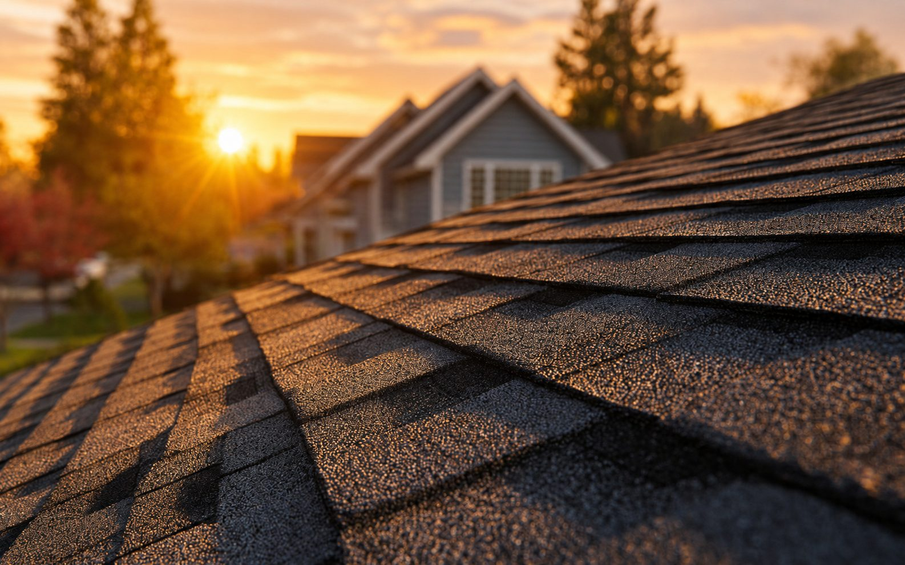
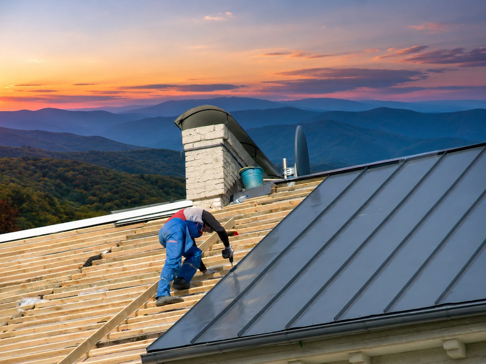
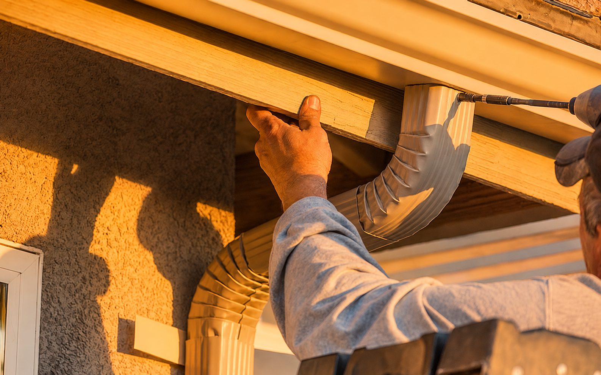

A Complete Roof Built from the Start
Roof Installation in Arden and Asheville
Planning a new roof system? Talk with Arden Roofing about your project. Get a Free Estimate
A Complete Roof Built from the Start
Planning a new roof system? Talk with Arden Roofing about your project. Get a Free Estimate
A successful roof installation depends on more than the visible finished surface. The roof deck, underlayment, flashing, penetrations, ventilation details, edges, transitions, and final roofing material all work together to move water away from the structure.
Arden Roofing provides residential roof installation for homeowners and projects throughout Arden, Asheville, and surrounding communities. Whether roofing a new home, an addition, or another structure that needs a complete roofing system, we focus on careful preparation and details that are easy to overlook once the finished material is in place.

Every roof has its own geometry and exposure. We plan the installation around the structure, roofing material, drainage paths, penetrations, and transitions instead of treating the job as a single layer of shingles.
The roof deck provides the base for the roofing system. Before the finished materials go on, the surface needs to be suitable for installation. We review accessible decking conditions and address project requirements so underlayment and roofing materials have a sound foundation.
Underlayment provides an important secondary layer beneath the finished roof covering. Placement and material choices depend on the roof design and project requirements. Particular attention is given to vulnerable areas where water can collect, slow down, or move toward a transition.
Roof-to-wall areas, chimneys, valleys, penetrations, and other transitions require careful water management. These details can have an outsized effect on how the roof performs. We plan flashing as part of the installation rather than treating it as an afterthought.
For asphalt roofing projects, layout, fastening, alignment, edge details, and manufacturer-required installation methods all contribute to the finished system. We work methodically so the roof is installed as a complete assembly rather than simply covered with material.
Roof and attic ventilation can affect heat and moisture conditions inside the roof assembly. The appropriate approach depends on the structure. Where ventilation is part of the project, we consider how intake and exhaust components work with the roof design.
At the end of installation, we review the completed work and remove roofing debris from the work area. We also communicate any project-specific items homeowners should know about the finished roof.
| Service | Estimated Cost | Average |
|---|---|---|
| Small residential roof installation | $7,000-$12,000+ | Varies by design |
| Typical asphalt roof installation | $10,000-$20,000+ | Varies by size |
| Large or complex installation | $18,000-$35,000+ | Project specific |
These ranges are broad planning figures only. Roof area, pitch, number of stories, access, material selection, valleys, dormers, penetrations, decking work, and other project details can materially change the final cost.

We pay attention to the layers and transitions that help the visible roofing material perform properly.
We explain the installation sequence and let homeowners know when site conditions affect the original plan.
Our team is familiar with steep lots, tree cover, changing weather, and the varied roof designs found throughout Western North Carolina.
We plan material placement, access, and cleanup so the property remains as manageable as possible during construction.
Planning a new roofing project in the Asheville area? Call (828) 305-4838 or request an estimate.
Free — no obligations

We learn about the structure, roof design, material preferences, access, and timing.
We outline the roofing work and provide a project-specific estimate based on the information available.
The team prepares the roof assembly and installs each component in sequence.
We inspect the completed installation, clear roofing debris, and review relevant project details with the homeowner.